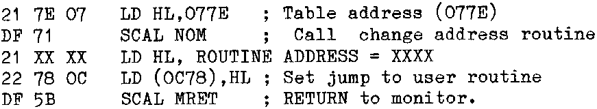

INMC 80 News |
September 1980 – January 1981 · Issue 2 |
| Page 5 of 59 |
|---|
FREE! Here is a simple idea to control the speed of the CRT display by using the User output routine.
In Basic my version is as follows:
(The routine starts at 0D00H and is 12 bytes long)
LINE 10 contains the routine.
LINE 20 contains the addresses to be changed.
To vary display speed, POKE 3330,X where X can be 1 to 255, X=1 is Fast, X#255 is Very Slow ! This can be done at any point in a program.
In Machine Code, it looks like this:
To Execute From NAS SYS:
Load Routine address into 0C78
Load Table address (0C7E) into 0C73
These are the Output Routine Address (UOUT) and Start of ‘table of output routines’ (OUT) respectively in the Nas Sys workspace.
Here is a routine which will save the trouble of entering these addresses by hand each time:
This can be tacked on to the end of the routine itself (or onto the beginning) and should be executed before trying to change display speed. To vary speed, load (Routine address +2) with the value required. Remember, ‘0’ will give you a very slow display, but ‘1’ will give almost normal speed. This is why I have set the initial speed at ‘1’.
Yours byteingly,
DAVE LORDE
Pontyclun
S. Wales.
Ed. There is now a tape version of the Sargon chess available. It comes complete with the Sargon book, a graphics EPROM containing a Chess set, and a small piggy-back board to allow switching between the normal graphics and the chess set. This is produced by Bits & PCs, costs 35.00 plus VAT, and is available from various Nascom distributors.
| Page 5 of 59 |
|---|